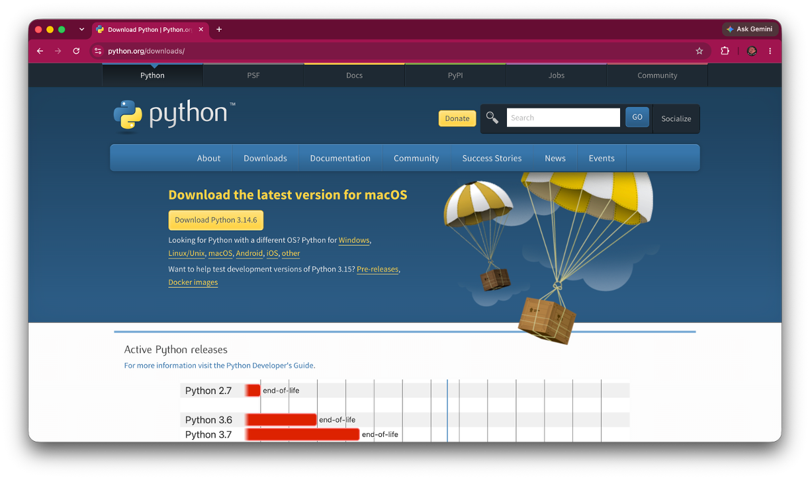
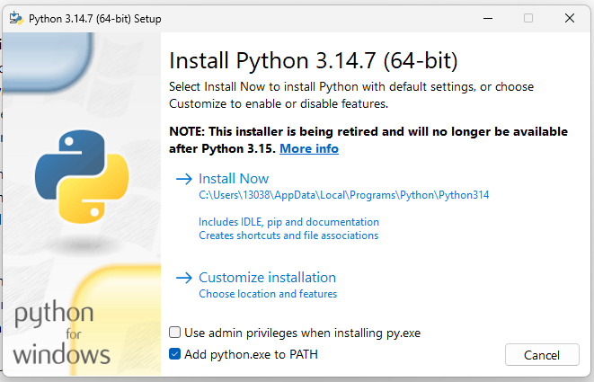

Python Installation Guide
Install Python, verify that it works, and avoid the most common beginner setup problems
Python Installation Guide
Install Python, verify that it works, and avoid the most common beginner setup problems
Before You Begin
This guide is for you if you:
- have never installed Python before
- are preparing for an introductory programming or data science course
- want to check whether Python is already installed correctly or
- are seeing messages such as
python: command not found,Python was not found, orpip is not recognized.
By the end of the guide, you will be able to:
- choose between a standard Python installation and Anaconda
- install Python using the approach that fits your needs
- verify that Python and
pipare available - understand the basic pieces that were installed and
- diagnose several common installation problems.
Follow your instructor’s directions when they specify a particular Python version, distribution, or environment. Course requirements should take priority over the general recommendations in this guide.
Which Installation Should You Choose?
There is more than one legitimate way to install Python. The best option depends on what you are trying to do.
| Your situation | Recommended starting point |
|---|---|
| You are taking your first Python course | Install Python from python.org |
| You want a small, general-purpose installation | Install Python from python.org |
| Your instructor specifically requires Anaconda | Install Anaconda |
| You want Python, Jupyter, and many scientific packages bundled together | Consider Anaconda |
| You already have a working installation | Skip to Verify Your Installation |
Option 1: Python from python.org
This is the recommended starting point for most beginners.
Advantages
- relatively small installation
- works well with VSCode and most other IDEs
- makes the relationship between Python and installed packages easier to understand and
- includes
pip, Python’s standard package installer.
Tradeoff
You install additional packages yourself as you need them.
Option 2: Anaconda
Anaconda is a Python distribution designed primarily for scientific computing and data science. It bundles Python with Jupyter, the Conda environment manager, and many commonly used packages.
Advantages
- includes many scientific and data-analysis tools
- includes Jupyter
- offers environment and package management through
condaand - can be convenient when a course or research group already uses Conda.
Tradeoffs
- much larger download
- introduces additional concepts, including Conda environments and the distinction between
condaandpip - can be more setup than a first-time learner needs.
Recommendation: Install Python from python.org unless your instructor asks you to use Anaconda or you specifically want the bundled scientific-computing environment.
I already installed Anaconda. Should I uninstall it?
No. If Anaconda is working and your course supports it, there is usually no reason to remove it. The important question is which Python environment your terminal, editor, or notebook is currently using.
Install Python from python.org

Open the official Python website
Go to https://www.python.org/downloads/.
Avoid downloading Python from an advertisement, third-party download site, or an unfamiliar app store listing.
Download the recommended stable release
The website normally recommends an installer for your operating system. Unless your instructor specifies a version, choose the current stable Python 3 release.
Save the installer somewhere you can find it, such as your Downloads folder.
Run the installer
Follow the instructions for your operating system below.
Windows Installation
Open the downloaded Python Install Manager.
Follow the prompts to install the Python Install Manager.
Once installation is complete, open Command Prompt, PowerShell, or the VS Code terminal.
Run:
pythonIf a Python runtime is not already installed, the Python Install Manager can install the latest stable version of Python.
Follow any additional configuration prompts that appear.
Close and reopen your terminal before verifying the installation.
Recent versions of Python use the Python Install Manager on Windows. You may see older tutorials that use a standalone Python installer with an Add python.exe to PATH checkbox. The standalone installer is being phased out, so this guide uses the newer installation method.

The Python Install Manager manages the Python versions installed on your computer. After setup, commands such as python and py can be used to access Python from the command line.
If you later need a particular version of Python, you can use the Python Install Manager to install and manage additional versions rather than downloading a separate installer for each version.
macOS Installation
- Open the downloaded
.pkginstaller. - Continue through the installation screens.
- Accept the default location unless you have a specific reason to change it.
- Finish the installation.
- Close and reopen Terminal before verifying the installation.
On many Macs, the command used for Python 3 is python3 rather than python.
Linux Installation
Many Linux distributions already include Python 3. Before installing anything, open a terminal and run:
python3 --versionWhen Python is missing or your course requires a different version, follow the package-management instructions for your Linux distribution.
Install Anaconda
Use this section only when you have chosen Anaconda.
Download Anaconda
Go to https://www.anaconda.com/download and select the installer for your operating system.
Run the installer
Accept the default installation options unless your course or workplace provides different directions.
On Windows, Anaconda may recommend that you launch its tools through Anaconda Navigator or Anaconda Prompt rather than adding Anaconda to the system PATH. Follow the current installer recommendation.
Verify Conda
Open Anaconda Prompt on Windows, or Terminal on macOS or Linux, and run:
conda --versionYou should see a Conda version number.
Both can install Python packages, but they manage packages and environments differently. Avoid switching between them casually inside the same environment until you understand which environment you are changing.
Verify Your Installation
Verification is not optional. It tells you whether the installation worked and which command your computer recognizes.
Check Python
Open a new terminal window.
On Windows, try:
python --versionOn macOS or Linux, try:
python3 --versionA successful result looks similar to:
Python 3.x.xThe exact version number may differ.
Start Python Interactively
Run the command that worked for you:
pythonor:
python3You should see a Python prompt beginning with >>>.
Test it:
print("Python is ready")Exit with:
exit()Check pip
Use the Python command that worked on your computer:
python -m pip --versionor:
python3 -m pip --versionUsing python -m pip or python3 -m pip makes the connection between the Python interpreter and its package installer explicit.
What Did You Install?
A standard Python installation normally gives you three important pieces.
The Python Interpreter
The interpreter executes Python code. When you run a .py file, a notebook cell, or an interactive command, a Python interpreter performs the computation.
The Standard Library
Python includes many built-in modules for common tasks such as working with files, dates, mathematics, and operating-system information.
pip
pip installs additional packages that are not included in the standard library.
For example:
python -m pip install pandasDo not install packages merely to test the installation. First verify Python and pip; then install the packages required for your course or project.
Common Installation Problems
python is not recognized or the command is not found
Try python3 --version. If that works, use python3 on this computer.
Why it happens
Your system may use python3 as the command name, or Python may not have been added to PATH.
Check
python3 --versionFix
- If
python3works, usepython3. - If neither command works, close and reopen the terminal.
- On Windows, rerun the installer and confirm that Python is added to
PATH. - Confirm that the installation completed successfully.
Windows opens the Microsoft Store when I type python
Windows may be using an App Execution Alias instead of the Python installation you intended.
Check
Confirm whether Python is installed from python.org and whether its installation folder is on PATH.
Fix
- Search Windows Settings for App execution aliases.
- Review the aliases for
python.exeandpython3.exe. - Disable conflicting store aliases when you have installed Python separately.
- Open a new terminal and check the version again.
pip is not recognized
Use the Python interpreter to launch pip directly.
Try:
python -m pip --versionor:
python3 -m pip --versionIf this works, use the same form when installing packages:
python -m pip install package-nameA package installs, but Python still cannot import it
The package was probably installed into a different Python environment.
Why it happens
Your computer may have more than one Python installation. The pip command and the Python interpreter used by your editor or notebook may refer to different environments.
Fix
- Identify the Python interpreter used by the terminal, editor, or notebook.
- Run pip through that interpreter:
python -m pip install package-name- In VS Code, verify the selected interpreter or notebook kernel.
I have more than one version of Python
Multiple versions are not automatically a problem. The goal is to know which one your project is using.
As a beginner, keep one primary installation when possible. Before installing packages, verify the interpreter with:
python --versionor:
python3 --versionBest Practices
- Download Python or Anaconda only from the official source.
- Follow your course’s required version or distribution when one is specified.
- Verify the installation before adding packages or configuring an editor.
- Use
python -m piporpython3 -m pipwhen you need to ensure that pip belongs to the intended interpreter. - Avoid installing several Python distributions without a clear reason.
- Before reinstalling anything, identify which interpreter or environment is currently active.
- Copy complete error messages as text when asking for help.
Next Steps
Once Python is installed and verified, continue with the tools required for your work.
Common next steps include:
- install Visual Studio Code
- select the correct Python interpreter in VS Code
- install or launch Jupyter
- create a project folder
- install only the packages required for the project.